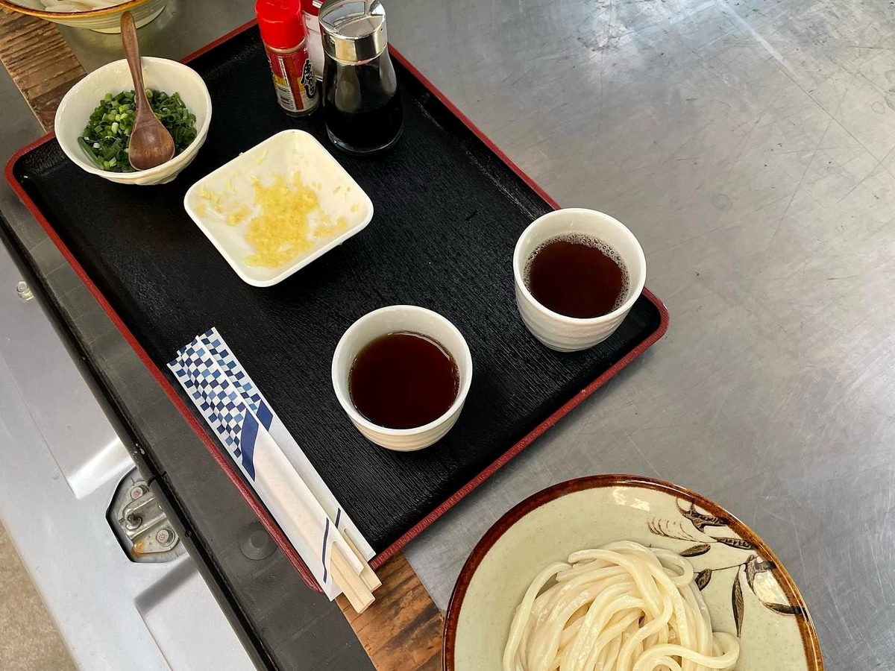
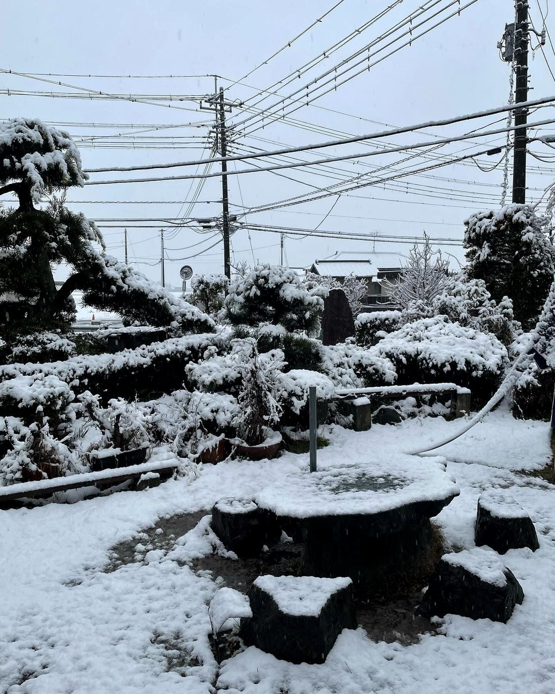

つけうどん
太くコシのある手打ち麺を、出汁の効いたつけ汁で手繰る一杯。薬味を添えて、まずはそのまま。
MUSASHINO UDON — TETSU / KAWAGOE
太打ちを、出汁の効いたつけ汁で。
古民家で食べる、太くて黒い武蔵野うどん。
11:00〜14:00（麺切れ次第）｜水・木 休み
About
川越・久下戸。古い農家をそのまま使った、古民家のうどん屋です。田舎の親戚の家に寄ったような座敷で、太くコシのある武蔵野うどんを手繰れます。
麺は太打ち。色は少し黒く、噛むほどに小麦の香りが立ちます。出汁の効いたつけ汁にくぐらせて、まずはそのままどうぞ。

田舎の親戚の家に、寄ったような。
Shop Info
| 店名 | 田舎うどん てつ |
|---|---|
| 住所 | 埼玉県川越市久下戸2881 |
| アクセス | JR川越線 南古谷駅ちかく（古民家・駐車場あり） |
| 営業時間 | 11:00〜14:00（L.O.14:00） ※麺がなくなり次第、終了します |
| 定休日 | 水曜・木曜 ※変更いただく場合があります。最新はInstagramでご確認ください |
| 電話 | 049-235-3631 |